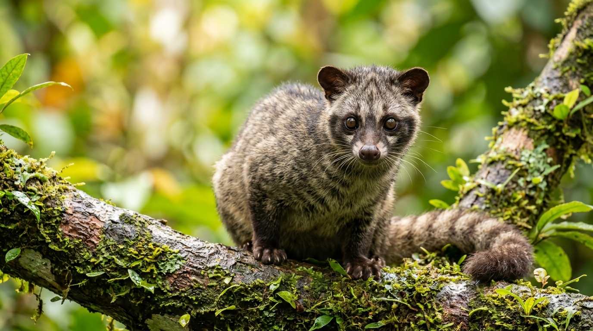
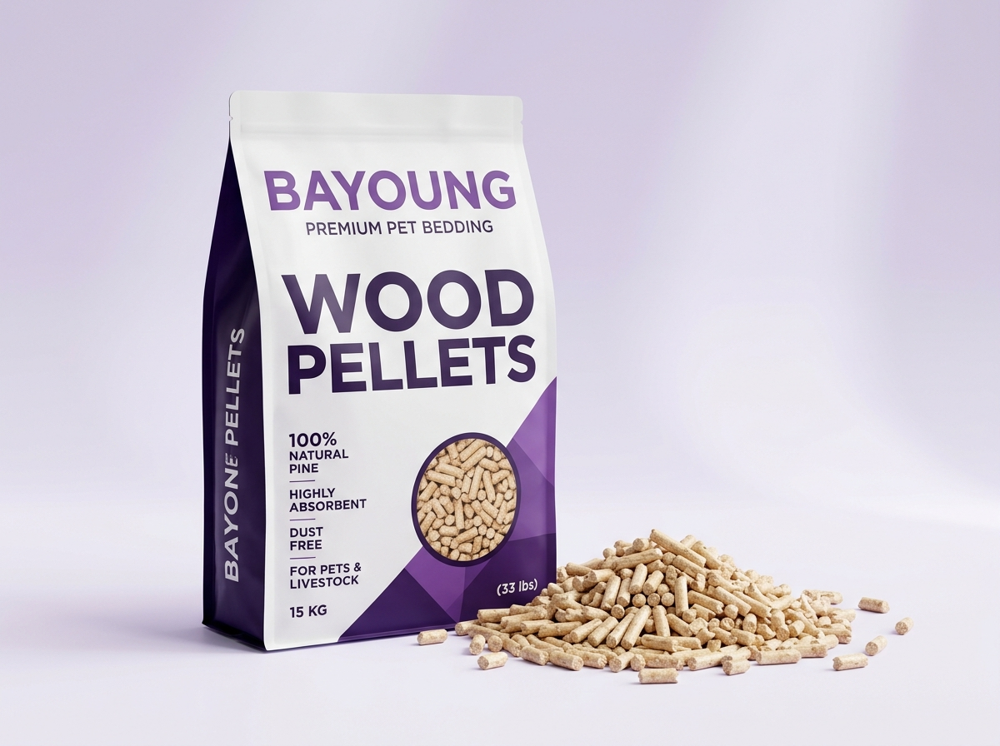
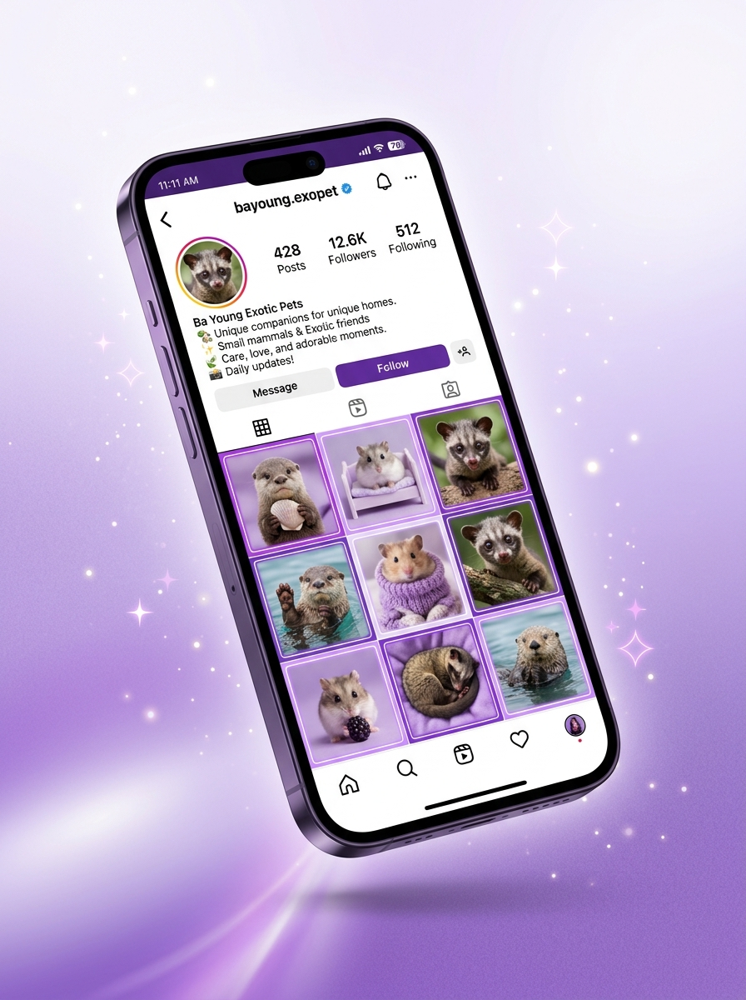

Temukan ✦
Sahabat Satwa Eksotis.
Jelajahi ragam satwa ramah keluarga, pelajari panduan perawatannya, dan temukan sahabat setia Anda bersama Bayoung Exopet.

Bahagia
Nyata 🐾
Satwa Sehat & Jinak
Dirawat telaten dengan pakan bergizi, vitamin rutin, serta terlatih ramah berinteraksi dengan manusia.
Wood Pellets Alami
100% serat kayu pinus murni tanpa kimia. Menyerap urin 3x lipat dan mengikat bau amonia seketika.
Pendampingan Seumur Hidup
Bebas berkonsultasi seputar pola makan, kesehatan, dan perawatan harian bersama tim ahli kami.
1.200+ Sahabat Komunitas
Wadah silaturahmi pecinta satwa eksotis se-Indonesia untuk saling belajar dan berbagi pengalaman seru.
Temukan yang Anda Butuhkan
Pilih ruang yang ingin Anda kunjungi untuk pengalaman yang lebih fokus dan nyaman.
Ragam Satwa Eksotis
Pelajari profil lengkap Musang Pandan, Berang-berang Cakar Kecil, Hamster Syrian, Kelinci Netherland Dwarf, dan fauna lainnya.
Katalog Adopsi Satwa
Lihat ketersediaan satwa sehat hasil rawatan studio kami, lengkap dengan foto, usia, karakter, dan biaya adopsi transparan.
Produk & Wood Pellets
Pelet kayu pinus penyerap bau super ampuh, pakan bergizi seimbang, kandang nyaman, dan aksesoris eksklusif Bayoung.
Edukasi & Komunitas
Panduan perawatan pemula, tanya jawab interaktif seputar satwa, serta akses langsung ke grup WhatsApp pemelihara.
Profil Mendalam Satwa Studio
Pahami kebutuhan dasar setiap spesies sebelum memutuskan untuk menyambut mereka ke rumah Anda.
Musang Pandan
Paradoxurus hermaphroditusMusang Pandan anakan hasil rawatan tangan manusia memiliki ikatan emosional (bonding) yang sangat erat dengan pemiliknya. Sangat cocok bagi pecinta hewan yang menginginkan sahabat interaktif di dalam rumah.
Berang-berang Cakar Kecil
Aonyx cinereusBerang-berang cakar kecil dikenal karena kecerdasannya yang tinggi dan sifat bermain air yang sangat menghibur. Memerlukan keeper yang memiliki komitmen waktu bermain dan sanitasi air yang baik.
Hamster Syrian
Mesocricetus auratusHamster Syrian memiliki ukuran tubuh yang pas di genggaman tangan dan sifat yang tidak mudah menggigit jika sudah jinak. Sangat ramah untuk pemula dan anak-anak dengan pengawasan orang tua.
Kelinci Netherland Dwarf
Oryctolagus cuniculusRas kelinci terkecil di dunia dengan mata bulat besar dan wajah imut. Bersih, tidak bersuara, dan mudah dilatih buang air di kotak kotoran (litter-trained) beralaskan wood pellets.
Landak Mini Afrika
Atelerix albiventrisPeliharaan mungil yang unik dengan duri halus tanpa racun. Tidak berisik dan memiliki jadwal makan yang mandiri, cocok untuk Anda yang memiliki mobilitas kerja tinggi di siang hari.
Reptil & Fauna Eksotis
Exotic Pet Curated CollectionKoleksi reptil pilihan seperti gecko, kura-kura darat, dan eksotis lainnya yang telah lulus observasi kesehatan dan adaptasi pakan di studio Malang.
4 Langkah Mudah Mengadopsi
Proses aman, transparan, dan mengutamakan kenyamanan satwa kesayangan Anda.
Pilih & Konsultasi
Pilih satwa idaman Anda, lalu klik tombol WhatsApp untuk konsultasi karakter, pola makan, dan ketersediaan.
Video Call / Studio
Lihat kondisi satwa secara live melalui panggilan video atau berkunjung langsung ke studio kami di Pakisaji Malang.
Persiapan Kandang
Siapkan kandang yang higienis dengan alas pelet kayu (wood pellets) berkualitas agar satwa tidak stres saat tiba.
Serah Terima & Garansi
Satwa dikirim via ekspedisi khusus hewan atau diambil langsung dengan garansi sehat dan pendampingan seumur hidup.
Bayoung Wood Pellets Premium
Inovasi alas kandang alami 100% serat kayu pinus murni. Efektif mengikat bau amonia, menyerap cairan seketika, dan tidak berdebu sehingga aman bagi sistem pernapasan satwa eksotis Anda.

~ Kualitas Terbaik ~
Cara Merawat Musang Pandan agar Jinak Total
Pelajari pola pakan bernutrisi buah & protein, cara memotong kuku yang benar, melatih musang menjadi shoulder-pet, dan menjaga aroma pandan alaminya.
Mengapa Pelet Kayu Jauh Lebih Sehat dari Serbuk Kayu?
Mengetahui bahaya debu serbuk gergaji terhadap saluran pernapasan satwa eksotis serta keunggulan wood pellets pinus dalam menyerap cairan dan bau.
Komitmen dan Perawatan Berang-berang Cakar Kecil
Kebutuhan kolam air mandi harian, menu ikan segar berprotein tinggi, suplemen kalsium, dan cara melatih stimulasi kecerdasan bermain.
Tata Cara Merawat Kelinci Kerdil & Hamster Syrian
Larangan memandikan kelinci dengan air, pentingnya serat timothy hay, penataan kandang soliter, dan menjaga suhu ruangan tetap sejuk.
Pertanyaan yang Sering Diajukan
Jawaban singkat seputar legalitas, pengiriman, dan pemeliharaan satwa eksotis.
Bergabung di Grup WhatsApp Bayoung Exopet
Dapatkan akses prioritas ke informasi satwa adopsi yang baru lahir, sesi tanya jawab perawatan gratis langsung bersama tim studio, info lelang perlengkapan, dan silaturahmi sesama keeper eksotis se-Indonesia.

Kisah Bahagia Bersama Satwa Bayoung
Pengalaman nyata para keeper yang telah menyambut sahabat eksotis ke rumah mereka.
"Adopsi Musang Pandan baby dari Bayoung benar-benar jinak total! Dari hari pertama sampai sekarang suka tidur di pundak saya. Mas Abbiyu juga sabar banget ngebimbing pakan hariannya."
"Wood pellets-nya juara banget! Dulu kandang berang-berang dan kelinci sering pesing, begitu ganti pelet kayu Bayoung langsung netral baunya dan gampang dibersihkan."
"Pengiriman ke Bandung aman dan selamat. Kondisi otter lincah, aktif berenang, dan makannya lahap. Senang sekali bertransaksi di studio yang terpercaya seperti ini."
Kecintaan yang Menjadi Dedikasi
Bayoung Exopet didirikan oleh Abbiyu Nafis Alwan di Pakisaji, Kabupaten Malang. Bermula dari kecintaan mendalam terhadap fauna eksotis nusantara—terutama Musang Pandan dan Berang-berang—kami melihat bahwa banyak orang ingin memelihara satwa unik namun kekurangan akses terhadap satwa yang jinak, sehat, serta panduan perawatan yang benar.
Di Bayoung Exopet, satwa bukanlah komoditas semata, melainkan keluarga. Setiap anakan satwa dirawat telaten dengan asupan nutrisi lengkap, dilatih interaksi sejak dini, dan hanya diserahkan kepada calon pemelihara yang siap berkomitmen. Kami juga memproduksi sendiri Bayoung Wood Pellets untuk memberikan solusi alas kandang terbaik yang bebas bau dan ramah lingkungan.
3 Pilar Filosofi Kami
Nilai dasar yang kami pegang teguh dalam setiap aspek pelayanan studio.
Kesejahteraan Satwa (Animal Welfare)
Kesehatan dan kenyamanan satwa adalah prioritas mutlak. Seluruh satwa mendapatkan pakan segar berkualitas, vitamin, dan interaksi yang cukup agar terhindar dari stres.
Edukasi Berkelanjutan
Kami tidak melepas satwa begitu saja. Kami mendampingi calon keeper dengan edukasi mendalam serta konsultasi gratis seumur hidup agar satwa terawat dengan sempurna.
Kebersihan Alami & Ekologis
Melalui produk wood pellets 100% serat pinus murni, kami menghadirkan lingkungan kandang yang bebas bau amonia tanpa bahan kimia sintetis yang berbahaya.